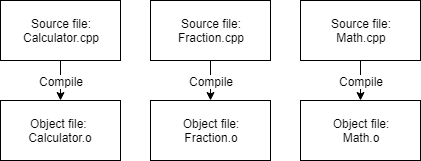
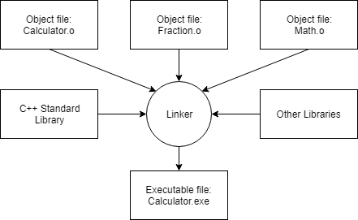

0.5 — Introduction au compilateur, à l'éditeur de liens et aux bibliothèques
Poursuivons notre discussion de ce schéma, présenté dans la leçon précédente (0.4 -- Introduction au développement en C++) :

Examinons maintenant les étapes 4 à 7.
Étape 4 : compiler votre code source
Pour compiler les fichiers de code source C++, nous utilisons un compilateur C++. Le compilateur parcourt séquentiellement chaque fichier de code source (.cpp) de votre programme et effectue deux tâches importantes :
Premièrement, le compilateur vérifie que votre code C++ respecte les règles du langage C++. Si ce n'est pas le cas, le compilateur vous signale une erreur (avec le numéro de ligne correspondant) pour vous aider à localiser ce qu'il faut corriger. Le processus de compilation est également interrompu tant que l'erreur n'est pas corrigée.
Deuxièmement, le compilateur traduit votre code C++ en instructions du langage machine. Ces instructions sont stockées dans un fichier intermédiaire appelé fichier objet. Le fichier objet contient également d'autres données nécessaires ou utiles aux étapes suivantes (notamment les données dont l'éditeur de liens a besoin à l'étape 5, et celles utilisées pour le débogage à l'étape 7).
Les fichiers objets portent généralement le nom nom.o ou nom.obj, où nom est le même que celui du fichier .cpp dont ils sont issus.
Par exemple, si votre programme comporte 3 fichiers .cpp, le compilateur générera 3 fichiers objets :

Des compilateurs C++ sont disponibles pour de nombreux systèmes d'exploitation différents. Nous verrons bientôt comment installer un compilateur, il n'est donc pas nécessaire de le faire maintenant.
Étape 5 : éditer les liens entre les fichiers objets et les bibliothèques, puis créer le fichier de sortie souhaité
Une fois le compilateur terminé avec succès, un autre programme appelé éditeur de liens (linker) entre en action. Son rôle est de combiner tous les fichiers objets et de produire le fichier de sortie souhaité (par exemple un fichier exécutable que vous pouvez lancer). Ce processus s'appelle l'édition de liens. Si une étape de l'édition de liens échoue, l'éditeur de liens génère un message d'erreur décrivant le problème, puis interrompt le processus.
Premièrement, l'éditeur de liens lit chacun des fichiers objets générés par le compilateur et vérifie qu'ils sont valides.
Deuxièmement, l'éditeur de liens s'assure que toutes les dépendances entre fichiers sont correctement résolues. Par exemple, si vous définissez quelque chose dans un fichier .cpp puis l'utilisez dans un autre fichier .cpp, l'éditeur de liens relie les deux. Si l'éditeur de liens ne parvient pas à associer une référence à sa définition, vous obtiendrez une erreur d'édition de liens, et le processus sera interrompu.
Troisièmement, l'éditeur de liens intègre généralement un ou plusieurs fichiers de bibliothèque, c'est-à-dire des ensembles de code précompilé « empaquetés » pour être réutilisés dans d'autres programmes.
Enfin, l'éditeur de liens produit le fichier de sortie souhaité. Il s'agit généralement d'un fichier exécutable qui peut être lancé (mais il peut aussi s'agir d'un fichier de bibliothèque si c'est ainsi que vous avez configuré votre projet).

La bibliothèque standard
C++ est livré avec une vaste bibliothèque appelée bibliothèque standard C++ (généralement appelée « la bibliothèque standard »), qui fournit un ensemble de fonctionnalités utiles pour vos programmes. L'une des parties les plus utilisées de la bibliothèque standard C++ est la bibliothèque d'entrées/sorties (souvent appelée « iostream »), qui contient les fonctionnalités permettant d'afficher du texte à l'écran et de récupérer les saisies clavier de l'utilisateur.
Presque tous les programmes C++ utilisent la bibliothèque standard d'une manière ou d'une autre, il est donc très courant que la bibliothèque standard C++ soit liée à vos programmes. La plupart des éditeurs de liens C++ sont configurés pour l'intégrer par défaut, vous n'avez donc généralement pas à vous en préoccuper.
Bibliothèques tierces
Vous pouvez éventuellement lier des bibliothèques tierces, c'est-à-dire des bibliothèques créées et distribuées par des entités indépendantes (et non dans le cadre du standard C++). Par exemple, supposons que vous vouliez écrire un programme qui lit des sons. La bibliothèque standard C++ ne contient aucune fonctionnalité de ce type. Vous pourriez écrire votre propre code pour lire les fichiers sonores depuis le disque, vérifier qu'ils sont valides, ou déterminer comment acheminer les données audio vers le système d'exploitation ou le matériel pour les jouer через le haut-parleur, mais ce serait un travail considérable ! Il est bien plus probable que vous trouviez un projet logiciel existant doté d'une bibliothèque qui implémente déjà tout cela pour vous.
Nous verrons comment lier des bibliothèques (et comment en créer vous-même !) dans l'annexe.
Construction (build)
Comme plusieurs étapes sont impliquées, le terme construction (build) désigne souvent l'ensemble du processus de conversion des fichiers de code source en un exécutable pouvant être lancé. L'exécutable produit à l'issue de cette construction est parfois appelé simplement un build.
Pour les lecteurs avancés
Pour les projets complexes, des outils d'automatisation de la construction (comme make ou build2) sont souvent utilisés pour automatiser le processus de compilation des programmes et l'exécution de tests automatisés. Bien que ces outils soient puissants et flexibles, comme ils ne font pas partie du cœur du langage C++, et qu'il n'est pas nécessaire de les utiliser pour poursuivre, nous ne les aborderons pas dans cette série de tutoriels.
Étapes 6 et 7 : tester et déboguer
C'est la partie amusante ! Vous pouvez maintenant exécuter votre programme et voir ce qu'il fait !
Une fois que vous pouvez lancer votre programme, vous pouvez le tester. Tester (testing) consiste à vérifier si votre logiciel fonctionne comme prévu. Un test de base consiste généralement à essayer différentes combinaisons de saisies pour s'assurer que le logiciel se comporte correctement dans les différents cas.
Si le programme ne se comporte pas comme prévu, vous devrez procéder à un débogage (debugging), c'est-à-dire la recherche et la correction des erreurs de programmation.
Nous verrons plus en détail comment tester et déboguer vos programmes dans les chapitres suivants.
Environnements de développement intégrés (IDE)
Notez que les étapes 3, 4, 5 et 7 impliquent toutes des logiciels qu'il faut installer (éditeur, compilateur, éditeur de liens, débogueur). Bien que vous puissiez utiliser des programmes distincts pour chacune de ces activités, un logiciel appelé environnement de développement intégré (IDE) regroupe et intègre toutes ces fonctionnalités. Nous présenterons les IDE et en installerons un dans la section suivante.
Source originale : https://www.learncpp.com/cpp-tutorial/introduction-to-the-compiler-linker-and-libraries/